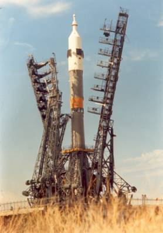
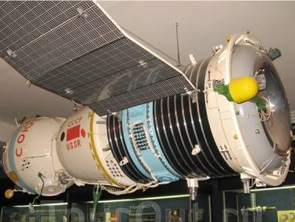
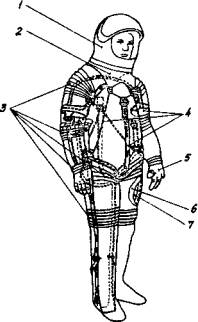
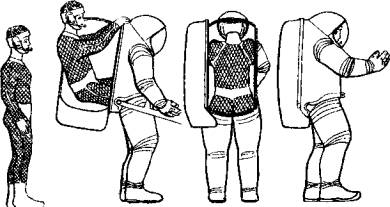
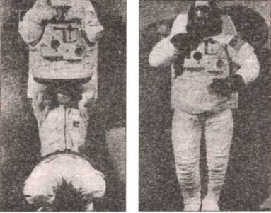
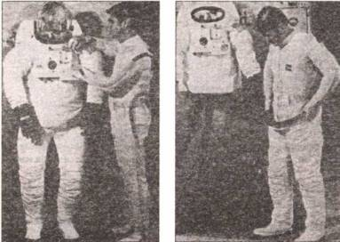
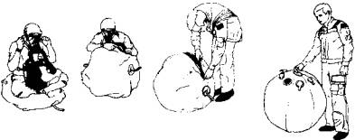
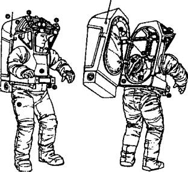
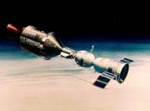
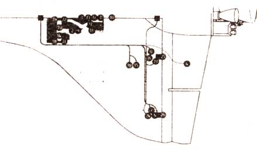

Спасти человека
Потери в любом деле, в том числе и космической войне, если таковая случится, можно существенно уменьшить, если заранее побеспокоиться о системах эвакуации и спасения экипажей. И тут надо отдать должное нашим специалистам — разработанные ими системы оказались куда эффективнее американских.
ВЫСТРЕЛИТЬ СОБОЙ. Уже на первом «Востоке», как известно, была предусмотрена система катапультирования. Ю. А. Гагарин воспользовался ею на конечном этапе приземления, как то и было предусмотрено программой. Однако поначалу катапультируемое кресло не было снабжено достаточно мощной ракетной установкой, а потому не позволяло отлететь от ракеты, стоящей на стартовой позиции, достаточно далеко. Поэтому космонавту в случае аварии нужна была помощь наземных служб, способных вытащить его буквально из огня.
Дело в том, что из-за технологического разброса мощности твердотопливного двигателя, который выбрасывал кресло, часть возможной зоны приземления приходилась на котлован, вырытый под стартовым столом ракеты. Над ним пришлось натягивать сетку, и спасатели в случае аварии должны были быстро выскочить из подземного бункера и вернуться туда, неся на руках спасенного космонавта в скафандре.
Впрочем, самой опасной для Гагарина была вовсе не авария на старте, а полет с 45-й по 90-ю секунды. В это время высота и скорость уже слишком велики для катапультирования в кресле, но слишком малы для отстрела спускаемого аппарата: он не имел собственных двигателей ориентации и должен был ориентироваться по потоку за счет смещения центра тяжести. Для этого он должен был падать довольно долго, то есть с изрядной высоты.
Космонавтам, летавшим в дальнейшем на кораблях «Восход» и «Восход-2», в случае аварии пришлось бы и того хуже. Из-за отсутствия достаточного объема одноместной кабины, превращенной в многоместную, катапультные кресла пришлось заменить обычными. А при полете экипажа из трех человек им пришлось снять даже скафандры.

Ракета «Союз» на старте.
В итоге до сброса головного обтекателя у них не было никаких шансов на спасение. Безопасностью пожертвовали ради рекордных полетов. К счастью, таких полетов было всего два.
НЕСЧАСТЛИВЫЕ «СОЮЗЫ». Новые корабли «Союз» получили систему, обеспечивающую безопасность космонавтов на всей траектории выведения на орбиту. Однако прежде чем она получила возможность доказать свою эффективность, случилось две катастрофы, приведшие к гибели В. Комарова, а также экипажа в составе Г. Добровольского, В. Волкова и В. Пацаева.
Однако обе они случились при приземлении, когда аварийная система спасения, отвечающая прежде всего за спасение на старте, ничем помочь не могла.
Комарова подвела парашютная система посадки. На высоте 9 км отстрелилась крышка парашютного контейнера, вышел вытяжной парашют, за ним тормозной, который затормозил спускаемый аппарат до расчетной скорости раскрытия основного парашюта, но… тот не вышел из своего контейнера. Запасной парашют также не спас ситуации — перекрученные стропы не дали и ему раскрыться.
Причиной тому, как уже говорилось, была неудачная конструкция парашютного контейнера, зажимавшая купола при повышенных нагрузках. Но это уж поняли позднее, при анализе причин катастрофы.
А тогда при ударе о землю со скоростью 35–40 м/с спускаемый аппарат разрушился и начался пожар. Таким образом, спастись у Комарова не было никакой возможности.
Другой трагической страницей советской космонавтики стал «Союз-11». В 1971 году впервые в мире была запущена долговременная орбитальная станция «Салют». Первыми космонавтами, оказавшимся на ее борту, были Георгий Добровольский, Владислав Волков, Виктор Пацаев, стартовавшие 6 июня 1971 года. Пробыв на борту станции 21 сутки и успешно выполнив программу полета, экипаж отстыковался от станции и начал готовиться к приземлению.

Макет корабля «Союз».
Однако при спуске на высоте 150 км случилась трагедия. Еще в космосе, сразу после отделения спускаемого аппарата, вдруг открылся один из двух предназначенных для дыхания космонавтов при посадке клапанов (обычно они открываются только на высоте 3 км). Давление в спускаемом аппарате начало стремительно падать.
Космонавты поняли, в чем дело, и попытались исправить положение. Георгий Добровольский расстегнул ремни и, очевидно, хотел заткнуть клапан, но времени на это у него уже не было. Менее чем через минуту после разгерметизации экипаж потерял сознание и наступила смерть. Люди могли бы спастись, если бы на них были скафандры. Но для спецкостюмов, как уже говорилось, в тесном спускаемом аппарате не нашлось места.
СПАСЕНИЕ НА КОНЧИКЕ ИГЛЫ. Впоследствии космический корабль «Союз» неоднократно был усовершенствован, и вот уже более 30 лет он летает без катастроф. В немалой степени космонавты обязаны этим и САС — системе аварийного спасения.
Так, 26 сентября 1983 года Владимир Титов и Геннадий Стрекалов собирались отправиться в очередной полет. Однако вместо этого ракета «Союз-У» взорвалась прямо на стартовом столе. Свыше 300 т жидкого кислорода и керосина превратили все вокруг в кромешный ад. Однако за мгновение до этого на самой верхушке исполинской ракеты сработали двигатели системы аварийного спасения, и космонавты вместе с кабиной сначала взмыли вверх на 1500 м, а потом плавно опустились на землю в нескольких километрах от бушующего пожара.
Причем, как показал потом анализ ситуации, экипаж спасся почти случайно. Автоматика, которая в данном случае должна была послать приказ на включение САС, почему-то не сработала. Однако оператор системы спуска сумел вовремя оценить ситуацию и дать вручную команду на отстрел кабины за доли секунды до того, как вспыхнувший пожар пережег провода связи. Радиоканал в этот момент уже не работал — вспыхнувшее пламя ионизировало воздух, и образовался своеобразный экран, не пропускающий команд.
Еще, конечно, безупречно сработала сама система аварийного спасения. На «Союзе» основой ее является твердотопливный двигатель массой около 1000 кг, помещенный на самую верхушку головного обтекателя ракеты. Вместо одного большого сопла двигатель САС имеет дюжину маленьких сопел, расположенных по окружности и отклоненных на 30 градусов от вертикальной оси ракеты.
Такое устройство обусловлено тем, что корабль «Союз» состоит из трех отсеков — орбитального, приборно-агрегатного и спускаемого. Причем спускаемый аппарат с космонавтами находится в середине связки, а силовой элемент, к которому можно прикладывать усилия, — в самом низу конструкции. Поэтому с ракеты приходится сдергивать 7-тонный корабль целиком, вместе с обтекателем.
Расположение же двигателя САС сверху на штанге, а не внизу, под космическим кораблем, диктовалось соображениями экономии веса и горючего: сразу после того, как ракета-носитель стартует и набирает высоту в нормальном режиме, штанга вместе с двигателями САС отстреливается от обтекателя и на орбиту не вывозится. Там она уже не нужна.
При аварийном запуске и срабатывании САС космонавты испытывают перегрузку в 6,5 g — это больше, чем при штатном режиме. Но тут уж, как говорится, не до жиру… Комфортом пренебрегают для того, чтобы отстреливаемый аппарат мог быстро набрать скорость и высоту, уйти из опасной зоны. Всего за 3 секунды корабль отлетает от ракеты почти на 300 м. После чего двигатель выключается, выработав все топливо, и дальше вверх и вбок связка летит уже по инерции.
Через долю секунды после выключения двигателя на обтекателе раскрываются решетчатые крылья-стабилизаторы, в нормальном состоянии сложенные и прижатые к боковым стенкам обтекателя. На этих крыльях, в проектировании которых принимал в свое время участие и Юрий Гагарин, тогдашний дипломник Академии имени Жуковского, космонавты и улетают от места старта на 4–5 км.
На верхушке траектории полета отстреливаются обтекатель, приборно-агрегатный и орбитальный отсеки. А из спускаемого аппарата выходит и раскрывается парашют, и перед самой землей срабатывают еще и двигатели мягкой посадки.
ПАДАЮЩИЕ КАМНЕМ… Если же, повторим, старт происходит нормально, на 150-й секунде полета происходит сброс головного обтекателя, а с ним и системы аварийного спасения. Она космонавтам уже не пригодится. Высота теперь уже достаточна, чтобы в случае необходимости раскрытие парашюта и спуск происходили примерно так же, как и при штатном возвращении на Землю.
Впрочем, и тут возможны свои варианты. Так, 5 апреля 1975 года состоялся пуск космического корабля «Союз-18» с экипажем в составе командира Василия Лазарева и бортинженера Олега Макарова. «Союз» должен был состыковаться с орбитальной станцией «Салют-4». Взлет прошел нормально. На 261-й секунде должны были произойти отделение второй ступени и запуск третьей. Однако вместо этого начались неприятности.
После отделения второй ступени обычно сбрасывается хвостовой обтекатель третьей ступени, разделенный на четыре части. Однако из-за дефекта в данном конкретном случае один элемент не отделился. Космонавты сразу почувствовали сильную раскачку, в кабине загорелся тревожный сигнал «Авария носителя».
Экипаж вмешаться в ситуацию никак не мог; космонавты на этапе выведения — всего лишь пассажиры, все за них решает автоматика. Она не смогла справиться с раскачкой, а потому выключила двигатель и ввела в действие программу аварийного спуска.
Так как система САС была уже сброшена вместе с головным обтекателем, автоматика просто отделила космический аппарат от носителя. На некоторое время космонавты ощутили невесомость, затем, не набрав нужной скорости для выхода на орбиту, спускаемый аппарат начал снижаться с высоты 192 км, падая со все большей скоростью.
Сработали пиропатроны, разделяя корабль на три части: от спускаемого аппарата были отделены бытовой и приборно-агрегатный отсеки. Двигатели СУС (системы управления спуска) не смогли выдержать пологую траекторию снижения — аппарат полетел вниз по баллистической, словно камень. Начали резко расти перегрузки, доходя до 20-кратных. При этом люди обычно теряют сознание, но Лазарев с Макаровым были тренированы; кроме того, сильно кричали, как рекомендовали на тренировках, и это помогло.

Схема строения скафандра мягкого типа. Цифрами обозначены: 1 — гермошлем; 2 — силовая оболочка, не позволяющая скафандру чересчур раздуваться; 3 — шарниры в местах сгибов; 4 — элементы силовой системы; 5 — гермоперчатка; 6 — герметичная оболочка; 7 — подкладка. Внешняя защитная оболочка на рисунке не показана.

Так ныне «входят» в скафандр полужесткого типа отечественного производства через люк на спине.


Американские скафандры первое время состояли из двух частей — верхней и нижней. На фотографиях показана последовательность облачения астронавта в такой скафандр.
Наконец раскрылся парашют, сработали двигатели мягкой посадки. Но неудачи продолжали преследовать космонавтов. Приземлившись в горном районе, в 200 км юго-западнее Горно-Алтайска, спускаемый аппарат зацепился куполом за деревья. Хотя по инструкции полагается отстреливать парашют после посадки, чтобы он не тащил спускаемый аппарат при сильном ветре или, намокнув, не утопил его при посадке на воду, космонавты, почувствовав качание, не стали этого делать. Что и спасло им жизнь, иначе аппарат упал бы с горной кручи вниз, в пропасть.
Вот так завершился этот аварийный полет длительностью 21 минута 27 секунд.
БАЛЛИСТИЧЕСКАЯ ТРАЕКТОРИЯ. Аварии случались, и когда уже корабль выходил на орбиту. Вот какая ситуация, к примеру, сложилась 10–12 апреля 1979 года во время полета Н. Рукавишникова и гражданина Болгарии Г. Иванова. Экипаж должен был состыковаться с орбитальным комплексом «Салют-6»-«Союз-32». Но при подходе к станции на корабле «Союз-33» произошла авария сближающе-корректирующей установки. Стыковку пришлось отменить.
Корабль по инерции вращался вокруг Земли на орбите искусственного спутника. Что делать дальше? Космонавты на корабле, специалисты наземного Центра управления тщательно проанализировали создавшееся положение и приняли решение: «Приземляться!» Однако выполнить его было тоже не просто.

Герметическая оболочка для аварийной эвакуации астронавта и последовательность «упаковки» человека в нее.

Устройство скафандра Г. Гриффина, предназначенного для Луны и Марса. Цифрами обозначены: 1 — сигнальный прожектор; 2 — фары освещения; 3 — видеокамера; 4 — радиоантенна; 5 — створки; 6 — наушники; 7 — приборы наблюдения; 8 — микрофон; 9 — спинной люк; 10 — жесткий корпус; 11 — ранец системы жизнеобеспечения; 12 — рукоятка открытия ранца-скафандра; 13 — плечевые замки; 14 — пояс; 15 — комбинезон для защиты от перегрева и микрометеоритов.

Стыковка «Аполлона» и «Союза» на орбите.
Как уже говорилось, обычно корабль входит в плотные слои атмосферы плавно, по так называемой аэродинамической траектории. Перегрузки космонавтов, нагрев поверхности корабля из-за трения о воздух растут постепенно… Но в данном случае корректировать траекторию было нечем, ведь основная двигательная установка оказалась неисправной. Оставался аварийный вариант — дать тормозной импульс резервной установкой, а потом опять-таки производить спуск по неуправляемой, баллистической траектории.
«Впечатление было такое, что на грудь въехал „запорожец“», — вспоминал потом Николай Николаевич Рукавишников.
Тренированные люди с честью выдержали испытание. Оказался достаточным запас прочности и у техники…
СОВМЕСТНЫМИ УСИЛИЯМИ. Ну а если бы двигатели на «Союзе-33» совсем отказали? Что тогда?… И над этой проблемой подумали специалисты. «Несмотря на все принимаемые меры, нельзя исключать из рассмотрения ситуацию, когда космический корабль может нуждаться в срочной помощи…» Это сказал еще в 1975 году член-корреспондент АН СССР К. Д. Бушуев, технический директор советской стороны международного проекта «Союз»-«Аполлон».
Именно тогда наши и американские специалисты привели в соответствие стыковочные устройства на своих кораблях, чтобы они могли состыковаться друг с другом и спасти терпящих бедствие на орбите.
Поначалу ведь каждая сторона развивала свои спасательные системы самостоятельно. Правда, сходность решаемых задач привела к тому, что системы на кораблях «Меркурий» и «Аполлон» получились аналогичными нашим. Правда, в «Аполлоне», который создавался одновременно с «Союзом», спускаемый аппарат находился в самом верху и не было необходимости спасать весь приборно-агрегатный отсек. Отпадала нужда и в решетчатых крыльях, так как относительная масса двигателя системы спасения уменьшалась.
Тем не менее и в американских, и в российских кораблях масса спасательной ракеты довольно велика и в нормальном полете, когда все работает «штатно», через две минуты после старта двигательная установка САС сбрасывается. Еще через полминуты отстреливается головной обтекатель, а корабль и ракета продолжают путь на орбиту.
Но вот когда очередь дошла до создания многоразовых космических «челноков», тут подход к проблеме спасения оказался резко диаметральным.
Наши специалисты создали довольно сложную многоконтурную систему спасения. Первый контур спасения заключался в том, что если бы авария случилась на стартовом столе, экипаж мог катапультироваться, как это делалось на «Востоке». Если бы авария произошла на начальном этапе полета, ракета-носитель «Энергия» должна была изменить траекторию полета на возвратную. «Буран» отстыковывался и садился самостоятельно на взлетную полосу на Байконуре. Если проблемы происходили на более позднем участке полета, «Буран» выводился на одновитковую траекторию полета вокруг Земли с дальнейшей посадкой. Если же и эта схема не сработала, космический корабль должен был сесть на запасном аэродроме. И, наконец, если авария случилась бы непосредственно при посадке, снова сработала бы система катапультирования пилотов.
Идея же спасательных кабин, модная еще в 60-е годы, была забракована из-за чрезмерной сложности — по сути, пришлось бы строить «корабль в корабле». Тем не менее она не отринута окончательно. Один из ее идеологов, ставший гражданином Израиля, ныне пытается приспособить ее для спасения экипажей гиперзвуковых самолетов — с одной стороны и пассажиров аэробусов — с другой. В обоих случаях or самолета отделяется капсула с экипажем или пассажирами и опускается на своей парашютной системе.
А вот американцы в своем «Шаттле» уделили системе спасения недостаточное внимание. Единственное, что было предложено: в случае аварии астронавты выставляют из кабины специальный шест и по нему по очереди соскальзывают наружу с индивидуальными парашютами.
На практике эта система так ни разу не была использована. А две катастрофы, случившиеся с «Челленджером» и «Колумбией» — одна на взлете, вторая при заходе на посадку, — стоили жизни 14 членам двух экипажей. Не спасся никто.
Можно ли было хоть что-то предпринять? Давайте попробуем разобраться.
ОДНАЖДЫ В АМЕРИКЕ. Итак, 28 января 1986 года в 11 часов 38 минут при хорошей видимости и слабом ветре стартовал многоразовый транспортный космический корабль «Челленджер». Это был 25-й старт кораблей такого типа, и НАСА готовилось торжественно отметить юбилей. Но праздника не получилось. Спустя 73,2 секунды после запуска, когда «Челленджер» находился на высоте 14,3 км и зрителей уже отпустило волнение первых мгновений старта, раздался взрыв. Корабль исчез в облаке огня и дыма…
Инженер-испытатель космических аппаратов Ю. М. Марков так прокомментировал причины катастрофы:
«Уже через полсекунды после включения твердотопливных ускорителей камеры, снимавшие запуск, зафиксировали черный дым в области стыка средней и нижней секций правого твердотопливного ускорителя (ТТУ). На 59-й секунде кинопленка зарегистрировала пламя на том же стыке. Мощная струя огня прожгла топливный бак снизу, а затем сорвала ТТУ с нижнего узла крепления. Повернувшись на верхнем узле крепления, как на оси, он пробил топливный бак сверху. Жидкий водород смешался с жидким кислородом. Произошел взрыв.
Носовая часть космоплана, где было помещение для экипажа, оторвалась от средней части фюзеляжа, продолжала подъем до двадцатикилометровой высоты и только затем стала падать. Пролежавшая в морской воде полтора месяца магнитная лента воспроизвела переговоры астронавтов, в частности, восклицание пилота Смита. Видимо, он и командир Скоби успели заметить надвигающуюся опасность. В момент отрыва носовой части перегрузки не были так велики, чтобы астронавты погибли сразу. Они могли находиться в сознании до того момента, когда носовая часть ударилась о воду.
Вывод о том, что по крайней мере трое астронавтов не погибли в момент взрыва, был сделан на основании осмотра поднятых со дна четырех дыхательных аппаратов. Командир и пилот могут воспользоваться своими аппаратами, только встав с кресла, ибо аппараты монтируются за спинками. Так вот запас кислорода в трех аппаратах был израсходован почти полностью, а у аппарата Смита на три четверти…»
Как видите, катастрофа «Челленджера» произошла не мгновенно. У астронавтов было в запасе более минуты, чтобы спастись. Если бы, конечно, в их распоряжении была соответствующая система. Однако «теория, лежащая в основе конструкции „Шаттла“, сводилась к тому, что твердотопливные ускорители устроены таким образом, что никогда не откажут», так скажет позже астронавт Дж. Асеф.
Это признала и специальная комиссия, занимавшаяся расследованием. Л ведь поводов для благодушия не было. Запуски «Шаттлов» неоднократно находились на грани трагедии, сроки стартов много раз переносились из-за отказов то одной, то другой системы… Но кардинальные меры не принимались.
Впрочем, тогда руководители НАСА потратили два года времени и множество денег на внедрение ряда усовершенствований в конструкцию «Шаттла»: модернизацию твердотопливных ускорителей, изменение в составе герметизирующией мастики на стыках…
Кроме того, специалисты пришли к мнению, что надо несколько видоизменить всю схему запуска. Предлагалось вообще отказаться от твердотопливных ускорителей и производить запуск за счет жидкостных двигателей.
Эксперты также предлагали уменьшить состав экипажа. «Пусть в полет отправляются всего 2–5 человек, которые обеспечиваются средствами аварийного спасения на старте», — говорили они.
Однако к мнению этих специалистов не прислушались. И, как ныне выясняется, напрасно.
ВТОРАЯ КАТАСТРОФА. Корабль «Колумбия» отправился в путь с мыса Канаверал утром 16 января 2003 года, в четверг. Сам старт выглядел просто безупречным. Однако на следующий день эксперты, просматривая видеозапись, усмотрели неладное. Примерно на 80-й секунде полета фрагмент пеноизоляции размером с атташе-кейс и весом чуть больше килограмма отвалился от огромного топливного бака, ударил в левое крыло «Колумбии» и мгновенно испарился в виде белого облачка.
В НАСА срочно собрали группу инженеров, чтобы попробовать оценить последствия этого удара. Эксперты предположили, что отвалившийся кусок ударил по нижней поверхности крыла и удар был скользящим. Но для начала они рассчитали энергию соударения для лобового столкновения.
Последний раз аналогичный случай произошел с «Колумбией» в 1992 году. Почти такой же обломок пробил тогда в теплоизоляционной плитке отверстие менее 3 см в глубину и примерно 10 см в длину. Однако защитный слой остался цел, и «Колумбия» благополучно вернулась на Землю.
Эксперты решили, что нынешнее столкновение очень похоже, и смоделировали степень повреждения применительно к касательным ударам под углами до 1–6 градусов. Расчеты показали, что ущерб должен быть минимальным. В итоге инцидент сочли «несущественным», как посчитал руководитель программы космических кораблей многоразового использования Рон Диттемор.
Теперь в НАСА сомневаются и не исключают, что кусок мог быть обледеневшим, то есть гораздо тяжелее и опаснее. Именно он и оказался причиной катастрофы. Получается, что в США не извлекли уроков из трагедии космического «челнока» «Челленджер» в 1986 году. В ходе расследования той трагедии Ричард Фейнман, впоследствии нобелевский лауреат, указал на серьезные недостатки в методике, которую использовали американцы для оценки риска. Руководство НАСА знало, что во время взлета выхлопные газы могут разрушить резиновые кольцевые уплотнители в твердотопливных ракетных ускорителях. Но ничего не сделало для предотвращения аварии. Это было роковой ошибкой.
Первые признаки неисправности появились при возвращении «Колумбии» 1 февраля в 7.52 над Калифорнией. Когда «Шаттл» стремительно несся по еще темному утреннему небу, Том Бизли, астроном из Калифорнийского технологического института, разглядел, как от «челнока» отделяются небольшие яркие точки. А через несколько мгновений оторвался фрагмент поярче. В 20 км от института это также наблюдала астроном Кармен Санчес-Контрерас из радиообсерватории Оуэнс-Вэлли. «Я увидела второе яркое пятно, которое было намного больше. Оно оторвалось совсем неожиданно. Как будто от корабля что-то отделилось», — рассказала она корреспондентам «New Scientist».

Катастрофа «Колумбии». Цифры на схеме показывают расположение датчиков температуры в районе левого крыла и порядок, в котором они фиксировали аномальный рост температуры. Всего информация поступала в ЦУП 7 минут 32 секунды.
В тот же момент Центр управления в Хьюстоне получил первый предупреждающий сигнал о нештатном повышении температуры в нише левого шасси. В 7.53 четыре температурных датчика на задней кромке левого крыла неожиданно полностью отказали.
В 7.54 датчики внутри фюзеляжа над левым крылом зафиксировали, что за 5 минут температура выросла на 30 °C — в четыре раза выше нормы.
Еще через минуту температура существенно поднялась и в тормозной системе левого крыла. А в 7.57 отказали еще два датчика. Затем система управления полетом «Колумбии» обнаружила повышенное сопротивление по левому борту и начала компенсировать его при помощи элеронов — рулей управления полетом, расположенных в задней части треугольною крыла. Вслед за этим совершенно неожиданно включились два небольших двигателя малой тяги.
Однако сопротивление постоянно росло. Складывалось впечатление, что бортовой компьютер не справляется с управлением. В 7.59 над западным Техасом корабль еще продолжал бороться за свое существование. Командир Рик Хасбэнд хотел что-то сообщить Центру, однако посреди фразы связь оборвалась.
Корабль стремительно летел над восточным Техасом на высоте 63 км в 18 раз быстрее звука. А на Земле люди с ужасом смотрели, как он разваливается на множество пылающих обломков.
Версии о причинах трагедии стали появляться уже через несколько минут после того, как стало ясно, что корабль погиб. Возможность террористическою акта исключили почти сразу — высота и скорость делали «челнок» недосягаемым для атаки с Земли переносной ракетой класса «Земля-воздух». Диверсия до запуска тоже выглядела фантазией. Одни посчитали, что взорвался один из бортовых топливных баков, а другие — что «челнок» столкнулся с космическим мусором. Хотя вероятность этого чрезвычайно мала.
Расследование причин катастрофы показало, что наиболее вероятной причиной оказался все же злосчастный удар куска пеноизоляции. В результате от теплоизоляционною покрытия отвалилась одна или несколько плиток в районе створки шасси. Именно это и послужило причиной, что алюминиевый корпус «Шаттла» перегрелся из-за трения при спуске и загорелся. У алюминия низкая температура плавления — всего 660 °C, а тут на него воздействовала плазма с температурой выше 1000 градусов.
Так что долго ему воздействие плазмы было не выдержать. Поверхность левого крыла начала вспучиваться, а плитки — отваливаться. Пожар быстро распространился по всему кораблю. И он в итоге развалился на куски.
КАКИЕ БЫЛИ ВАРИАНТЫ? Увы, но шансов выжить в катастрофе у экипажа «Колумбии» не было: индивидуальные спасательные средства — парашюты — могли бы сработать только на более низкой высоте. По словам российского космонавта Бориса Морукова, имеющего опыт полетов на корабле «Атлантис» — «близнеце» погибшего «Шаттла» «Колумбия», при спуске «в кабине все сидят в специальных костюмах, обеспечивающих автономное существование». Однако «Шаттл» должен был находиться в атмосфере, чтобы экипаж мог осуществить аварийное покидание корабля и приземление на парашютах, подчеркнул Моруков.
Времени на это у семи астронавтов не оказалось.
Не могли они и отсидеться в космосе до прибытия спасательной экспедиции. Во-первых, для этого эксперты должны были принять такое решение на Земле и предупредить экипаж о грозящей опасности. Во-вторых, нужно было срочно подготовить запасной корабль и отправить его в космос. Ни того, ни другого в НАСА предпринято не было.
Не могла «Колумбия» и состыковаться с Международной космической станцией. Для этого экипажу нужно было сменить орбиту и высоту полета, на что у «Колумбии» не было достаточных запасов топлива.
В общем, похоже, в НАСА понадеялись на русский «авось». А он-то как раз и не вывез.
И последнее. По странному стечению обстоятельств в том полете экипаж проводил научные эксперименты по распространению огня в невесомости. На Земле свойства пламени зависят от гравитации. Нагретые газы, устремляясь вверх, придают пламени турбулентную форму. В невесомости оно образует сверхъестественные, абсолютно симметричные сферы. Сам процесс протекает очень медленно, поскольку без поднимающихся газов нет притока свежего воздуха, который питает огонь.
Медленное и равномерное горение позволяет сделать пламя очень слабым. В лаборатории на борту «Шаттла» каждый огненный шар выделял в 50 раз меньше энергии, чем обычная свеча для торта, что идеально подходит для изучения фундаментальных механизмов теплопередачи в процессе горения.
Результаты этих экспериментов могли оказаться полезными как для создания более высокоэффективных ракетных двигателей, так и для выработки наиболее эффективных методов тушения пожара на борту «Шаттла» или МКС. Однако результатов их на земле так никто и не узнал…
КАКИЕ БУДУТ ВЫВОДЫ? Катастрофа «Колумбии» заставила вновь заговорить о международном сотрудничестве для спасения терпящих бедствие астронавтов и космонавтов.
Вновь вспомнили об эксперименте «Аполлон»-«Союз», сдули пыль забвения с еще одного экзотичного проекта. Суть его заключается в том, чтобы транспортировать через безвоздушное пространство — из одного корабля в другой — человека без скафандра, в специальной многослойной оболочке, герметично закрывающейся молнией и специальными липучками. Влезть в такой шар человек может в считанные секунды, в то время как на надевание скафандра нужно как минимум полчаса.
Однако для того, чтобы терпящему бедствие кораблю могли оказать помощь не только соотечественники, но любой готовый к старту или находящийся в космосе корабль, нужны не только унифицированные стыковочно-переходные узлы, но и стандартные для всех размеры входных люков.
Совместная советско-американская космическая экспедиция показала, что и эта проблема разрешима, если есть на то добрая воля. Руководитель проекта пилотируемого космического корабля «Гермес», разрабатываемого во Франции, А. де Леффи заявил недавно, что и на этом корабле будет предусмотрена возможность замены стыковочного узла на совместимый с нашей системой.
А вот американцы, как ни странно, повели себя иначе. Во-первых, насколько мне известно, вся модернизация оставшихся трех «Шаттлов» свелась опять-таки к улучшению стартовых ускорителей и теплозащитного покрытия. Во-вторых, судя по всему, американцы вообще намерены сократить полеты на «Шаттлах» до минимума и готовятся к закрытию программы, невзирая на международные обязательства, в том числе и по МКС.